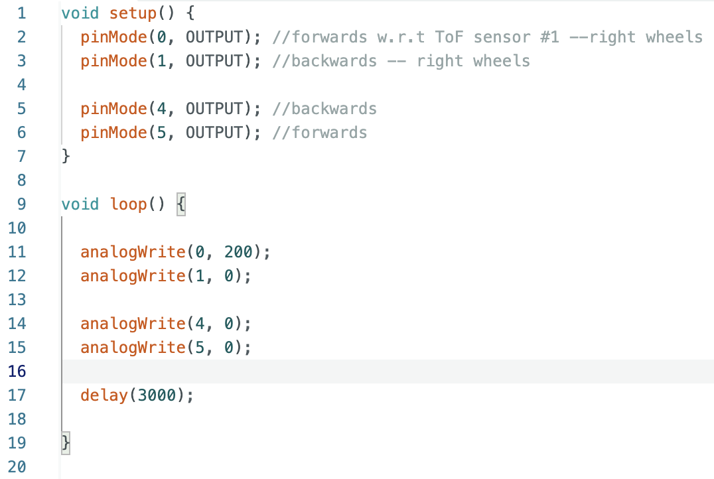
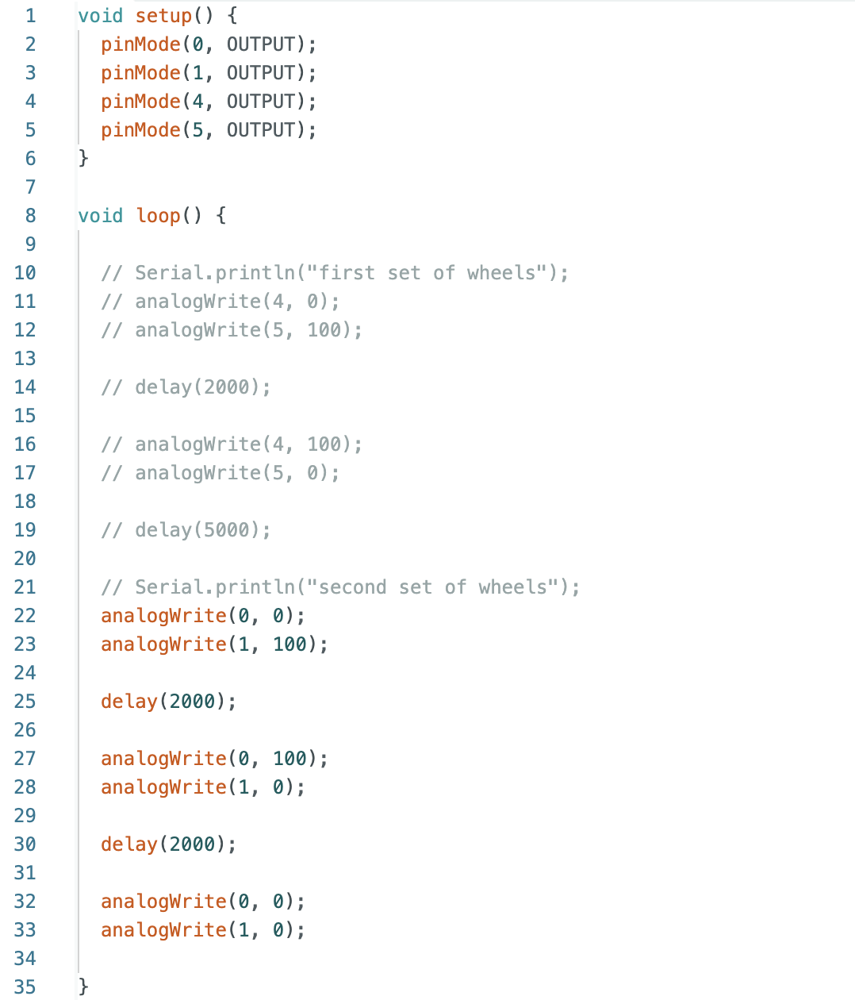
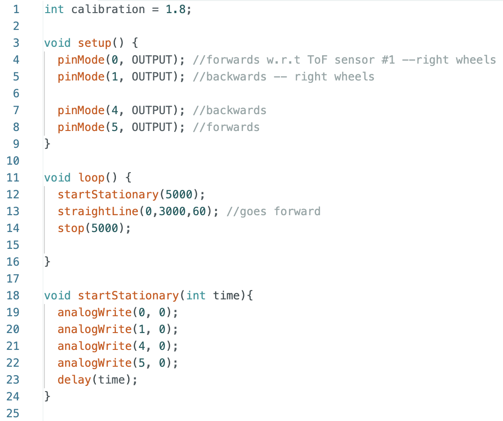

Lab 4: Motor Drivers and Open Loop Control
PRE-LAB
WIRING DIAGRAM: I started by reviewing the lecture notes and then taking a look at what Nila Narayan and Mikayla Lahr did last year. I then came up with this wiring diagram where AIN1 and BIN1 are connected in series to pin 0 and 4, for motor drivers 1 and 2 respectively. AIN2 and BIN2 follow the same setup but in pins 1 and 5, for motor drivers 1 and 2 respectively. And then, AOUT1 with BOUT1 and AOUT2 with BOUT2 are connected in series with eachother and then solder to each positive and negative lead of the DC motor, respectively.

BATTERY DISCUSSION: The Artemis board and the motors are powered separately to keep everything running smoothly. Motors can cause sudden changes in current, which might mess with the Artemis and make it glitch or reset. Using separate batteries prevents those power spikes from interfering with the board. Plus, motors need more power, so giving them their own battery makes sure they get enough without affecting the Artemis.
TASKS
PWM TESTS:
Before soldering the motor drivers to the motors themselves, I connected every OUT pin individually to the oscilloscope to make sure it is reading and ooutputting corrrectly. To do this, I connected the VIN and GND pins of the motor driver to the power supply and sent an output of around 3.7V which is a reasonable input voltage withing their 10V range. Below you can see my setup with a motor driver connected to the oscilloscope and power supply.

This is the code I burned on the Artemis to see if I can regulate the power on the motor driver output.
Here is an image of the output of the oscilloscope (each OUT pin), this plot remained constant when sending a 200 PWM signal to each OUT pin.

TESTING INDIVIDUAL MOTORS:
I proceeded to wire the motors and upload code to the Artemis board that will run one set of the wheels forward and then the same one backwards. The other set of wheels' code was commented out when working on this part. This is the code:
This is how the robot reacted:
FULLY BATTERY POWERED MOTOR DRIVERS:
Here I then moved from the power supply to the 850mAh battery given to us. And after some soldering, I was able to connect all the wires and upload this code:

In which the wheels moved as so:
CAR CHASSIS SETUP:

LOWER LIMIT PWM:
For the task where we tested the motor drivers running entirely on battery power, I wrote a simple code to make the car move forward for a few seconds and then backward. Since I was testing the motors, I decided to lower the PWM values—not only to observe their effects but also because I had limited space to run the car. I first reduced the PWM value to 100, then to 50, and finally to 45 to see if the car could move even slower. From these tests, I observed that at a PWM of 50, the car could complete its commands, but after a while, it started getting stuck as friction overpowered the movement. At 45, the car couldn't start at all, suggesting that this value is close to the minimum PWM required for the car to move.
CALIBRATION:
Before showing my calibrated code, let's take a look at how my robot performed when commanded to drive straight for 3 seconds at 60 PWM, so it reaches 6ft (the end of the blue tape is 6ft):
As you can see, my right wheels are moving faster than my left wheels. To calibrate this, I made an estimated guess for an initial value, starting at 1.2 and increasing it by 0.2 until I reached 1.8, where the robot was able to move in a straight line for 6 feet
While running these calibration tests, I noticed that the robot would sometimes move forward in small pulses. I found this strange, so I checked the wiring and discovered that the lead of one of the motor driver's soldered GND wires wasn't cut down properly and was touching the Vin wire. After fixing this issue, the car worked as expected.
This is how the car performed after including the calibration factor into the code:
The loop function was getting long so I started making functions for each command and this is the code the car ran:

ADDING TURNS:
For this part, I added a simple turn function to my code. Since the pins for moving forward are 0 and 5, and the pins for moving backward are 1 and 4, the pins for turning would be 0 and 4 for a left turn and 5 and 1 for a right turn.


And this is how the robot performed with a turn:
REFERENCES
For this Lab I referenced the past lab reports of Mikayla Lahr, Nila Narayan and Patty Meza. I used ChatGPT to fix my grammar and spelling. Also went to office hours during the weekend and the late session on Monday night, very much appreciated.
Back to Lab 4 on main page